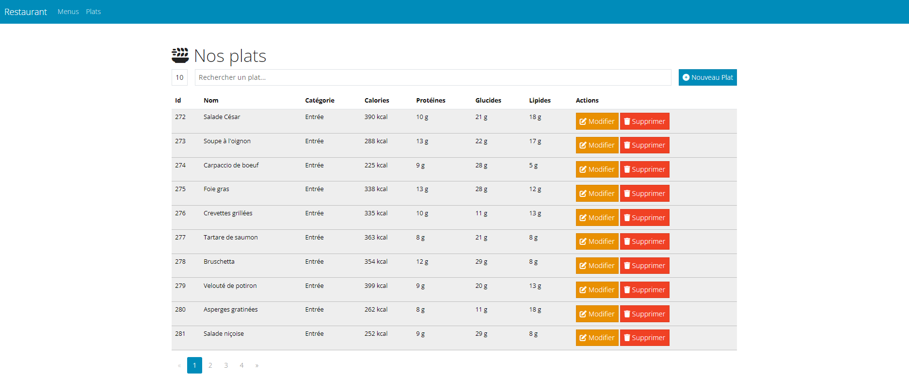
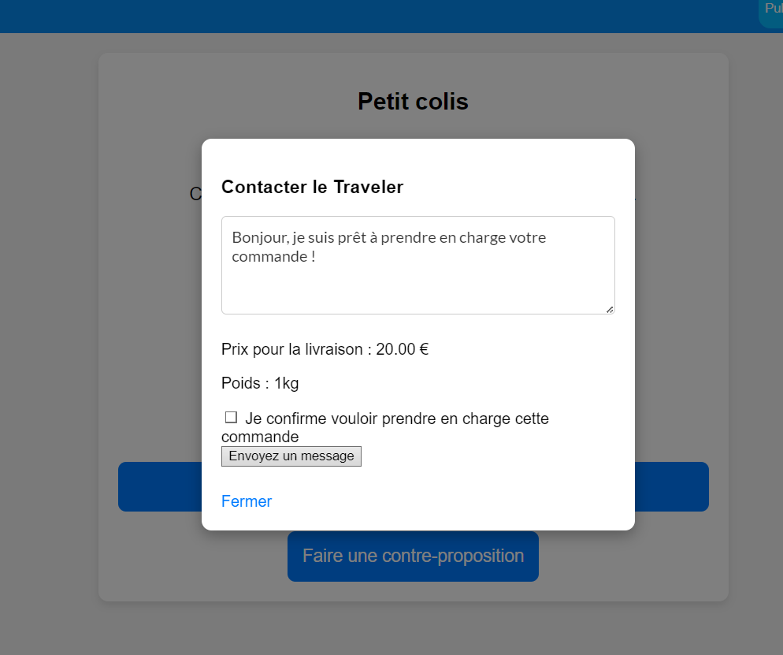
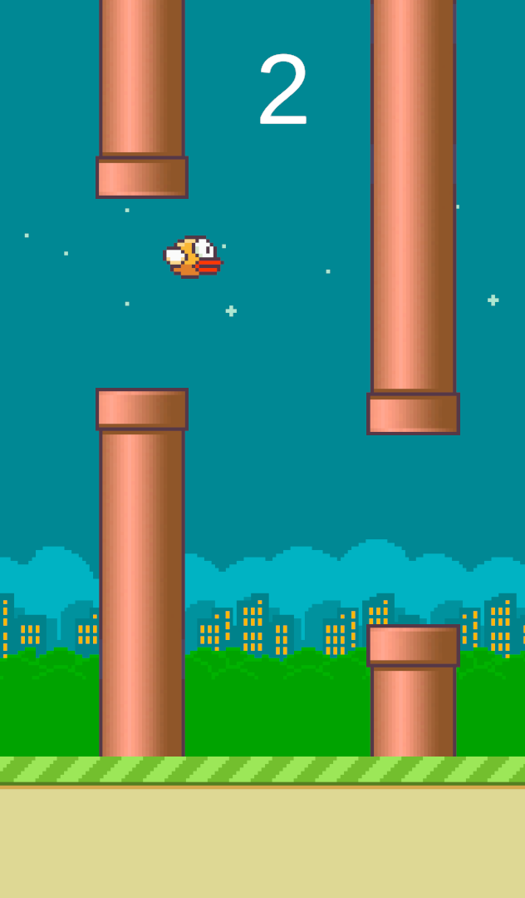
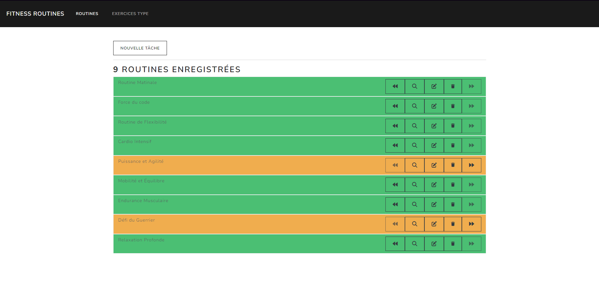
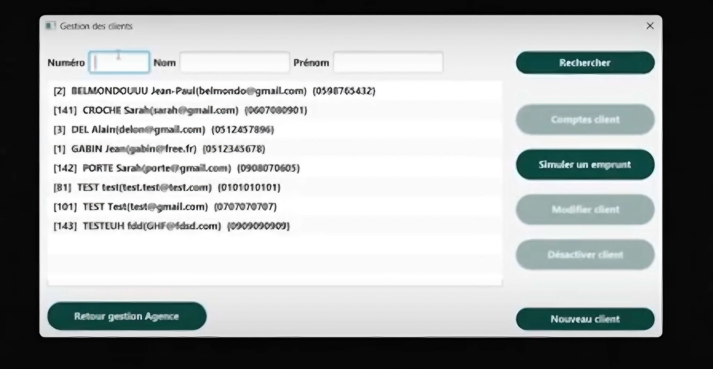

2025
Application Spring — Gestion de restaurant
Gestion de menus et plats avec interface Thymeleaf et API REST.
Voir les détailsDéveloppeur junior full-stack en formation, passionné par le web, les données et tout ce qui se code. Actuellement en stage de développement web chez Ubigreen.
Je m'appelle Alexis Declippel, j'ai 20 ans et je suis un passionné d'informatique. Actuellement étudiant en BUT Informatique, j'ai développé un intérêt pour les technologies numériques depuis mon plus jeune âge, ce qui guide aujourd'hui mon parcours d'études et mes projets personnels.
C'est l'univers de l'informatique dans sa globalité qui m'a toujours attiré, du développement logiciel à la gestion de données, en passant par l'infrastructure réseau. J'apprécie particulièrement la diversité des défis que ce domaine présente et la possibilité d'être constamment en apprentissage.
En dehors de mes activités académiques, je suis amateur de culture pop. Les mangas, animés et jeux vidéo font partie intégrante de mes loisirs. J'aime également beaucoup la musique et j'écoute des styles très variés, ce qui m'accompagne au quotidien.
Je pratique le volleyball en loisir, une activité qui me permet de déconnecter et d'entretenir l'esprit d'équipe. Plus largement, j'apprécie le sport sous toutes ses formes, ce qui m'aide à maintenir un équilibre entre vie professionnelle et personnelle.
Une sélection de projets réalisés durant ma formation et mes stages, avec les technologies utilisées.

Gestion de menus et plats avec interface Thymeleaf et API REST.
Voir les détails
Application web complète développée en méthode agile avec un client réel.
Voir les détails
Clone du célèbre jeu avec génération procédurale et gestion de la physique.
Voir les détails
Gestion de routines d'exercices avec opérations CRUD complètes.
Voir les détails
Site e-commerce avec base Oracle et application Java de relevé de capteurs.
Voir les détails
Application bancaire complète avec interface graphique, réalisée en équipe.
Voir les détails
Déploiement d'un serveur HTTP, gestion de comptes et base de données.
Voir les détails